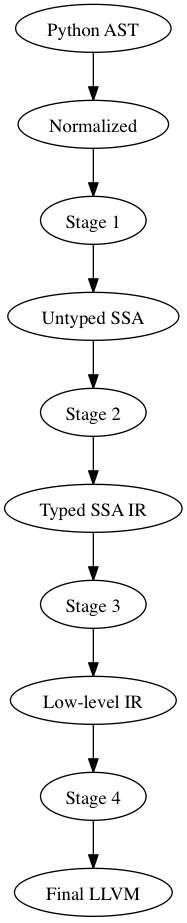

We provide different entry and exit points in the Numba architecture to facilitate reuse. These entry points also allow for further decoupling (modularity) of the Numba architecture. The Numba architecture is broken into several stages, or compilation passes. At the boundaries between each compilation stage, we define a specific intermediate representation (IR).
The Numba intermediate representations (IR’s) are, from high-level to low-level, as follows:
The Python AST IR (input to a numba frontend)
- Like a Python AST, but contains normalized structures (assignments, comparisons, list comprehensions, etc)
- Expanded control flow (with annotations)
Final LLVM IR, the final input for LLVM. This IR is not portable since the sizes of types are fixed.
All IRs except the last are portable across machine architectures. We get the following options for rewrites:

Each stage specifies a point for a series of IR transformations that together define the input for the next stage. Each rewrite may target a different IR stage:
The input to Stage 1 is an AST with all high-level syntactic constructs left intact. This allows high-level transformations that operate or expand most suitable at an abstract syntax level.
The input to Stage 2 is a Function with a sequence of basic blocks (expanded control flow), such that all control flow can be handled uniformly (and there may still be high-level annotations that signify where loops are (so that we don’t have to find them again from the dominator tree and CFG), where exceptions are raised and caught, etc). Def/use and variable merges are explicit.
Expressions and statements are encoded in sequences of AST expression trees. Expressions result in implicit Values which can be referred to in subsequent expression trees without re-evaluation (we can replace the CloneNode/CloneableNode mechanisms that currently allow subtree sharing).
The input to Stage 3 is the same as to Stage 2, except that it additionally contains type information (and type promotions).
Stage 4 is a low-level three-address code representation that still has polymorphic operations, such as c = add(a, b), where a and b can be operands of any scalar type. A final pass then lowers these constructs to specialized LLVM instructions.
IRs up to the low-level IR (input to Stage 4) should still contain explicit variable stores, so that passes can rewrite variable assignments to for instance assignments to struct or extension type instance members. Keeping stores and loads to and from these variables in the original order is important in the context of closures (or any function call which can modify a stack variable through a pointer).
We must make sure to support preloads for variable definitions across basic blocks, e.g.:
if ...:
A = ...
else:
A = ...
for i in range(...):
use(A[0])
In this example we want to preload A.data (and a.strides[0]). This can probably work equally well if each expression value is an implicit definition and we have a way to find Values given a Phi. We then get:
ValueC = BinOp(ValueA, Add, ValueB)
Store(Name('c'), ValueC)
Instead of:
Assign(Name('c'), BinOp(Name('a'), Add, Name('b')))
Numba’s initial intermediate representation is Python abstract syntax as defined in Python’s ast module documentation. Note that this definition is specific to the version of Python being compiled.
Numba must support Python 2 abstract syntax (specifically versions 2.6, and 2.7) for the foreseeable future.
The normalized IR starts with the latest ASDL definition for Python 3 abstract syntax, but makes the following changes:
Python’s top-level module containers, defined in the mod sum type, are abandoned. The Numba normalization stage will return one or more instances of the normalized stmt sum type.
Constructs that modify the namespace may only reference a single name or syntactic name container. These constructs include:
- global, nonlocal
- import, import from
- assignments
- del
Expressions are un-flattened. Operators on more than two sub-expressions are expanded into expression trees. Comparison expressions on more than two sub-expressions will use temporaries and desugar into an expression tree.
Numba must translate Python 2 code into Python 3 constructs. Specifically, the following transformations should be made:
- Repr (backticks): Call(Name(‘repr’), value)
- Print(...): Call(Name(‘print’), ...)
- Exec(...): Call(Name(‘exec’), ...)
- Subscript(..., slices, ...): Subscript(..., ExtSlice(slices), ...)
- Ellipsis (the slice): Ellipsis (the expression)
- With(...): ...
- Raise(...): ...
The formal ASDL definition of the normalized IR is given here: https://github.com/numba/numba/blob/devel/numba/ir/Normalized.asdl
Do we introduce this as being a DAG already? If not, we have a problem with desugarring comparisons. We need assignment to bind temporaries, so we’re going to have a hard time handling the following:
Compare(e0, [Eq, Lt], [e1, e2])
We’d want “e1” to be the same sub-expression in the normalized IR:
BoolOp(Compare(e0, Eq, e1), And, Compare(e1, Lt, e2))
How do later stages detect this as being the same sub-expression, etc?
We should add the following constructor to expr:
expr |= Let(identifier name, expr def, expr user)
Semantically, this is sugar for the following:
Call(Lambda(name, user), [def])
Later stages of the compiler should not bother to do this desugaring. They should instead prefer to just create a SSA definition:
$name = [| def |]
$0 = [| user |]
In the case of a chained comparison, we can then make the following transformation:
Compare(e0, [cmp0, ...], [e1, ...])
==>
Let(fresh0, e0,
Let(fresh1, e1,
BoolOp(Compare(fresh0, cmp0, fresh1), And,
Compare(fresh1, [...], [...]))
Where fresh0 and fresh1 are fresh variable names. The normalization transformer should recursively apply this rewrite until it reaches a case where the comparison is binary.
Given a normalized AST, we preserve the expr sum type, but perform control-flow analysis, data-flow analysis for phi-node injection, closure conversion, and lambda lifting. These transformations result in the following intermediate representation:
mod = Module(unit* units)
unit = CodeObject(..., block* blocks)
| DataObject(identifier label, expr init)
block = Block(identifier id, defn* defns, tail tail_expr)
tail = Jump(identifier target)
| If(expr test, identifier true_target, identifier false_target)
| Raise(expr exn)
| Return(expr result)
defn = (identifier? def_id, expr value)
expr |= Phi(phi_source* incomming)
phi_source = (identifier in_block, expr in_val)
The typed IR is similar to the untyped IR, except that every (sub-)expression is annotated with a type.
Furthermore, the AST is augmented with Promotion terms, which promote a variable for a merge in a subsequent CFG block. E.g.:
# y_0
if x > 10:
# block_if
y = 2 # y_1
else:
# block_else
y = 3.0 # y_2
In the example above, block_if will contain a Promotion with a use of y_1, replacing all uses of y_1 with the promotion value (which can only ever be a single phi node).
I.e. we rewrite y_1 = 2 to [ y_1 = 2 ; %0 = Promote(y_1, float) ] and PhiNode(NameRef(y_1), NameRef(y_2)) to PhiNode(%0, NameRef(y_2)).
All types adhere themselves to a schema, e.g.:
type
= Array(type dtype, int ndim)
| Pointer(type base_type, int? size)
| ...
Since the schema specifies the interfaces of the different nodes, users can supply their own node implementation (something we can do with the type system). Hence user-written classes can be automatically instantiated instead of generated ones. The code generator can still emit code for serialization.
The low-level portable IR is a low-level, platform agnostic, IR that:
- The IR contains only low-level, native types such as int_, long_, pointers, structs, etc. The notion of high-level concepts such as arrays or objects is gone.
This portable IR could be LLVM IR , which may still contain abstract or opaque types, and make calls to the Numba runtime library abstraction layer.
The final LLVM IR is LLVM assembly code, with no opaque types, and specialized to a specific machine target.
This appendix looks at various features and discusses various options for representing these constructs across the compiler.
A key step in the transition from the normalized AST IR to the untyped SSA IR is closure conversion. For example, given the following code:
def closure_test(foo):
foo += 3
def bar(baz):
return foo + (lambda x: x - global_z * foo)(baz)
foo += 2
return bar
Numba should generate SSA code equivalent to the following:
def __anonymous(af, x):
return x - global_z * af.foo
def __bar(af, baz):
return af.foo + make_closure(__anonymous,
make_activation_frame(af, []))(baz)
def closure_test(foo):
af = make_activation_frame(None, ['foo'])
af.foo = foo
af.foo += 3
bar = make_closure(__bar, af)
af.foo += 2
return bar
The above convention implies the following ASDL definition of the MakeFrame constructor (XXX cross reference discussion of IR expr language):
MakeFrame(expr parent, identifier* ids)
The parent frame provides a name space for identifiers unresolved in the current frame. If we employ this constructor, we diverge slightly from CPython. CPython manages each unbound variable within a cell, and these cells are copied into a new frame object (which is a tuple in CPython) for every child closure constructed.
Another method for doing closure conversion involves parameterizing over all free variables, and is closer to CPython’s approach:
def __anonymous(foo, x):
return x - global_z * foo.load()
def __bar(foo, baz):
return foo.load() + partial(__anonymous, [foo])(baz)
def closure_test(foo):
foo = make_cell(foo)
foo += 3
bar = partial(__bar, [foo])
foo += 2
return bar
This approach uses partial function application to build closures. The resulting representation affords opportunities for optimizations such as rewriting partial(fn, [x])(y) to fn(x, y).
XXX Do we need a MakeFunction() expression constructor for supplying default arguments? This follows from discussion of closures, above.
We considered three options for implementing iterators. The first was to use exception handling constructs. Given the following code:
for x in i:
if x == thingy: break
else:
bar()
baz()
Translation to the untyped IR could result in something like the following:
bb0: ...
$0 = Call(Constant(numba.ct.iter), [Name("i", Load())])
Try(bb1, [ExceptHandler(Constant(StopIteration), None, bb2)],
None, None)
bb1: $1 = Call(Constant(numba.ct.next), [$0])
If(Compare($1, Eq(), Name("thingy", Load())), bb3, bb1)
bb2: Call(Name("bar", Load()), [])
Jump(bb3)
bb3: Call(name("baz", Load()), [])
...
The second option was defining a Next() terminator. Next() could provide sugar for the special case where we are specifically waiting for a StopIteration exception:
bb0: ...
$0 = Call(Constant(numba.ct.iter), [Name("i", Load())])
Jump(bb1)
bb1: Next(Name("x", Store()), $0, bb2, bb3)
bb2: If(Compare(Name("x", Load()), Eq, Name("thingy", Load())), bb4, bb1)
bb3: Call(Name("bar", Load()), [])
Jump(bb4)
bb4: Call(Name("baz", Load()), [])
...
We loose SSA information, but provide opportunity for more readily recognizing for loops.
The third option was to follow the CPython VM semantics of FOR_ITER, where we define Next() as an expression constructor which can either return a result or some sentinel (specific to CPython, this is the NULL pointer):
bb0: ...
$0 = Iter(Name("i", Load()))
Jump(bb1)
bb1: $1 = Next($0)
If(Compare($1, Neq(), Constant(numba.ct.NULL)), bb2, bb3)
bb2: If(Compare($1, Eq(), Name("thingy", Load())), bb3, bb1)
bb3: Call(Name("bar", Load()), [])
Jump(bb4)
bb4: Call(name("baz", Load()), [])
...
This final output looks very similar to the output of the second option, but prevents us from having to use the Name() expression for anything other than global and parameter variables.
The Numba Google group’s generator discussion identified two methods for implementing generators in Numba. These can roughly be summarized as “enclosing everything in a big C-like switch statement”, and “use goroutines”. The following web pages elaborate on these techniques:
Given:
z = 42
def foo():
global z
bar(z)
z = 99
We could generate the following in untyped IR:
[
DataObject("z", Constant(42)),
CodeObject("foo", ([], None, None, ...), [
Block("entry", [
(None, Call(Name("bar", Load()), [LoadGlobal("z")])),
(None, StoreGlobal("z", Constant(99)))
], Return(Constant(None)))])
]
Both the raise and try-except-finally language constructs map into the untyped SSA IR as basic-block terminators:
tail = ...
| Raise(expr exn)
| Try(identifier body,
excepthandler* handlers,
identifier? orelse,
identifier? finalbody)
...
excepthandler = ExceptHandler(expr *types,
identifier? name,
identifier body)
attributes (int lineno, int col_offset)
In the low-level IR, these constructs lower into Numba run-time calls:
bb0: ...
Try('bb1', [ExceptHandler([ty0,...], 'name0', 'bb2'),
...
ExceptHandler([tyn,...], 'namen', 'bbn0')],
'bbn1', 'bbn2')
bb1: ...
Jump('bbn2')
bb2: ...
Jump('bbn2')
...
bbn0: ...
Jump('bbn2')
bbn1: ...
Jump('bbn2')
bbn2: ...
Goes to:
bb0: ...
$0 = SetupTry()
If($0, 'bb1', 'bb2')
bb1: ...
Jump('bbn2')
bb2: $1 = TestExn([ty0, ...])
If($1, 'bbx2', 'bb3')
bbx2: $name0 = GetExn()
...
Jump('bbn2')
...
bbn0: $2 = TestExn([tyn, ...])
If($2, 'bbxn', 'bbn1')
bbxn: $namen = GetExn()
...
Jump('bbn2')
bbn1: GetExn()
...
Jump('bbn2')
bbn2: ...
The following sections follow the Python Language Reference, and provide notes as on how the various Numba intermediate representations support the Python language.
We can use our schemas to:
Validate IR instances
Generate Python AST classes with typed properties and fast visitor dispatching
Generate Higher- or Lower-level LLVM IR
Generate conversion code to and from an ATerm representation
Generate a flat representation. E.g. a form of Three Address Code
Generate an implementation in other languages that can load a serialized representation and construct an AST in that langauge
Generate type definitions and serialization routines in other languages.
Note
This can help other languages target Numba as a backend compiler more easily, since they can build up the IR using in-memory data structures for the IR most suitable to their needs.
Generate definitions for use in Attribute Grammars
Executable IR (Executable IR)
There are two ideas:
- Write a simple interpreter
- Generate source code containing calls to a runtime library
This will be useful to use LLVM for in order to:
- Efficiently infer types of direct or indirect uses of recursion for autojit functions or methods
- Detect such recusion by letting LLVM find the SCCs in the call graph, and resolving in an analogous and cooperative manner to how we resolve the type graph